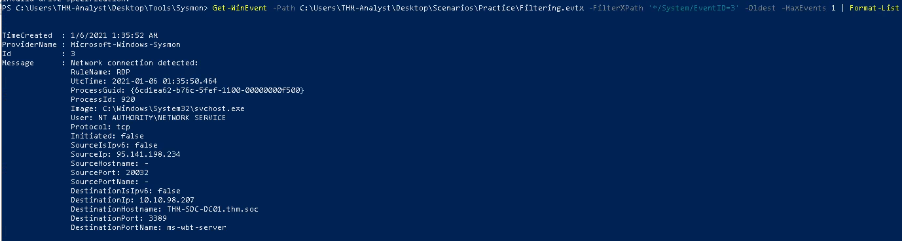

Sysmon
Introduction:⌗
System Monitor (Sysmon) is a Windows tool for enhanced security monitoring. It logs critical system events like process creation, file changes, and network activity, providing valuable insights for threat detection and analysis. Highly configurable to meet specific security needs. Sysmon depends on config file in order to tell the binary how to analyze the events that is receiving. Also note that you can either create your own Sysmon config file or download it Example.
Sysmon Event IDs:⌗
-
Event ID 1: Process Creation looks for any process that have been create. It uses the CommandLine and Image XML tags.
<RuleGroup name="" groupRelation="or"> <ProcessCreate onmatch="exclude"> <CommandLine condition="is">C:\Windows\system32\svchost.exe -k appmodel -p -s camsvc</CommandLine> </ProcessCreate> </RuleGroup> -
Event ID 3: Network Connect looks for any event occuring remotely. It uses the Image and DestinationPort XML tags.
<RuleGroup name="" groupRelation="or"> <NetworkConnect onmatch="include"> <Image condition="image">nmap.exe</Image> <DestinationPort name="Alert,Metasploit" condition="is">4444</DestinationPort> </NetworkConnect> </RuleGroup> -
Event ID 7: Image Loaded looks for DLLs loaded by processes, which can be used to hunt for DLL injection and DLL hijacking attacks. It uses the Image, Signed, ImageLoaded, and signature XML tags.
<RuleGroup name="" groupRelation="or"> <ImageLoad onmatch="include"> <ImageLoaded condition="contains">\Temp\</ImageLoaded> </ImageLoad> </RuleGroup> -
Event ID 8: CreateRemoteThread looks for processes that are injecting codes into other processes. It uses SourceImage, TargetImage, StartAddress, and StartFunction XML tags.
<RuleGroup name="" groupRelation="or"> <CreateRemoteThread onmatch="include"> <StartAddress name="Alert,Cobalt Strike" condition="end with">0B80</StartAddress> <SourceImage condition="contains">\</SourceImage> </CreateRemoteThread> </RuleGroup> -
Event ID 11: File Created looks for any file that is created or overwritten the endpoint. It uses TargetFilename XML tags.
<RuleGroup name="" groupRelation="or"> <FileCreate onmatch="include"> <TargetFilename name="Alert,Ransomware" condition="contains">HELP_TO_SAVE_FILES</TargetFilename> </FileCreate> </RuleGroup> -
Event ID 12/13/14: Registry Event looks for any changes or modifications to the registry. It uses TargetObject XML tags.
<RuleGroup name="" groupRelation="or"> <RegistryEvent onmatch="include"> <TargetObject name="T1484" condition="contains">Windows\System\Scripts</TargetObject> </RegistryEvent> </RuleGroup> -
Event ID 15: FileCreateStreamHash looks for any files created in alternate data stream. It uses TargetFilename XML tags.
<RuleGroup name="" groupRelation="or"> <FileCreateStreamHash onmatch="include"> <TargetFilename condition="end with">.hta</TargetFilename> </FileCreateStreamHash> </RuleGroup> -
Event ID 22: DNS Event looks for DNS queries and events for analysis. It uses QueryName XML tags.
<RuleGroup name="" groupRelation="or"> <DnsQuery onmatch="exclude"> <QueryName condition="end with">.microsoft.com</QueryName> </DnsQuery> </RuleGroup>
Download Sysmon:⌗
You can Either use Sysmon binary from Microsoft Sysinternals website, or download Microsoft Sysinternal Suite or use the following command in PowerShell to
install it:
Download-SysInternalsTools C:\Sysinternals
After installation is done, to run Sysmon we can use the following command:
Sysmon.exe -accepteula -i ..\Configuration\swift.xml
Practical:⌗
Now, after getting a brief explanation about Sysmon it’s time to use it with some logs that contains various attacks. To find all events with ID 3, we can simply use what we learned from the Windows Event Viewer lab and use Get-WinEvent or wevutil.exe. Get-WinEvent -Path C:\Users\THM-Analyst\Desktop\Scenarios\Practice\Filtering.evtx -FilterXPath ‘*/System/EventID=3’ | Measure-Object
Next, to find the first network event I sorted the events on event viewer by pressing on the data column and navigating on Details XML View tab. I also learned that you can use Format-List, which would do the same effect as navigating to Details XML View tab for the oldest event.

Now, I will be searching for events that are related to Metasploit meterpreter shell connections, usually meterpreter default ports are 4444 and 5555.
Get-WinEvent -Path C:\Users\THM-Analyst\Desktop\Scenarios\Practice\Hunting_Metasploit.evtx -FilterXPath '*/System/EventID=3 and */EventData/Data[@Name="DestinationPort"] and */EventData/Data=4444'
Mimikatz is a well-known and commonly used to dump credentials from memory along with other Windows post-exploitation activity. Mimikatz is mainly known for dumping LSASS. Now we need to try and hunt for events related to this attack by searching for a file created remotely.
Get-WinEvent -Path C:\Users\THM-Analyst\Desktop\Scenarios\Practice\Hunting_Mimikatz.evtx -FilterXPath '*/System/EventID=10 and */EventData/Data[@Name="TargetImage"] and */EventData/Data="C:\Windows\system32\lsass.exe"'
Now, we will be focusing on searching for RATs and backdoors. RAT example, Xeexe and Quasar. To help search for the malware we need to detect and identify ways to modify configuration files, this is known as hypothesis-based hunting. We can use a similar method for hunting malwares as the process we used to hunt for Metasploit, by searching for well-known ports. The file that is setup for Sysmon Ion-Storm alerts us when specific ports like 1034 and 1604 as well as exclude common network connections like OneDrive, by excluding events we still see everything that we want without missing anything and cutting down on noise.
Get-WinEvent -Path C:\Users\THM-Analyst\Desktop\Scenarios\Practice\Hunting_Rats.evtx -FilterXPath '*/System/EventID=3 and */EventData/Data[@Name="DestinationPort"] and */EventData/Data=8080'
Persistence is used by attackers especially Advanced Persistent Threat(ATP) to maintain access to a machine that they compromised. There are multiple ways to detect persistence on a machine, but I will hunt registry modification by looking for File Creation events and Registry Modification. We need to first look for SwiftOnSecurity detections for files being placed in the \Startup\ or \Start Menu directories. Or searching for rule names.
Evasion techniques are used by malware authors to evade both anti-virus and detections. Examples of evasion techniques are alternate Data Streams, Injections, Masquerading, Packing/Compression, Recompiling, Obfuscation, Anti-Reversing Techniques. First technique to find data stream by looking at hidden files using alternate data streams using Event ID 15.
Detecting Remote Threads, Adversaries commonly use remote threads to evade detections in combination with other techniques. Remote threads are created using the Windows API createRemoteThread and can be accessed using OpenThread and ResumeThread.